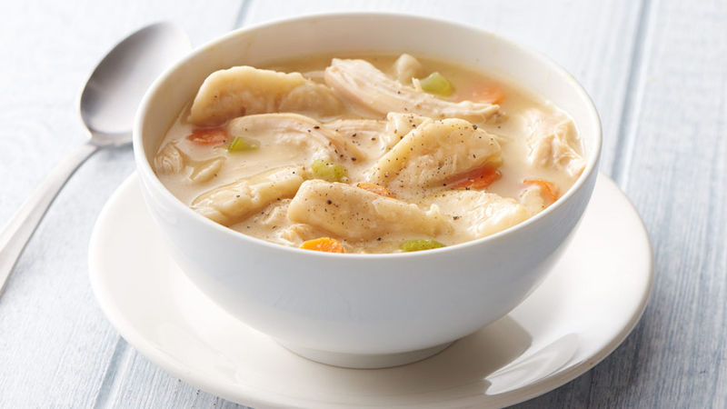

Chicken and dumplings

Description
This creamy Chicken and Dumplings recipe is the ultimate comfort food! Fluffy, homemade dumplings in the most flavorful chicken soup. Made from scratch in minutes!
Ingredients
1 carton (32oz) Progresso reduced-sodium chicken broth(4 cups)
3 cups shredded cooked chicken
1 can condensed cream of chicken soup
1 can refrigerated Pillsbury Grands Southern Homestyle Buttermilk Biscuits
2 medium carrots, chopped
Steps:
In 4- to 5-quart Dutch oven, heat broth, chicken, soup and poultry seasoning to boiling over medium-high heat; reduce heat to low. Cover; simmer 5 minutes, stirring occasionally. Increase heat to medium-high; return to a low boil.
On lightly floured surface, roll or pat each biscuit to 1/8-inch thickness; cut into 1/2-inch-wide strips.
Drop strips, one at a time, into boiling chicken mixture. Add carrots and celery. Reduce heat to low. Cover; simmer 15 to 20 minutes, stirring occasionally to prevent dumplings from sticking.